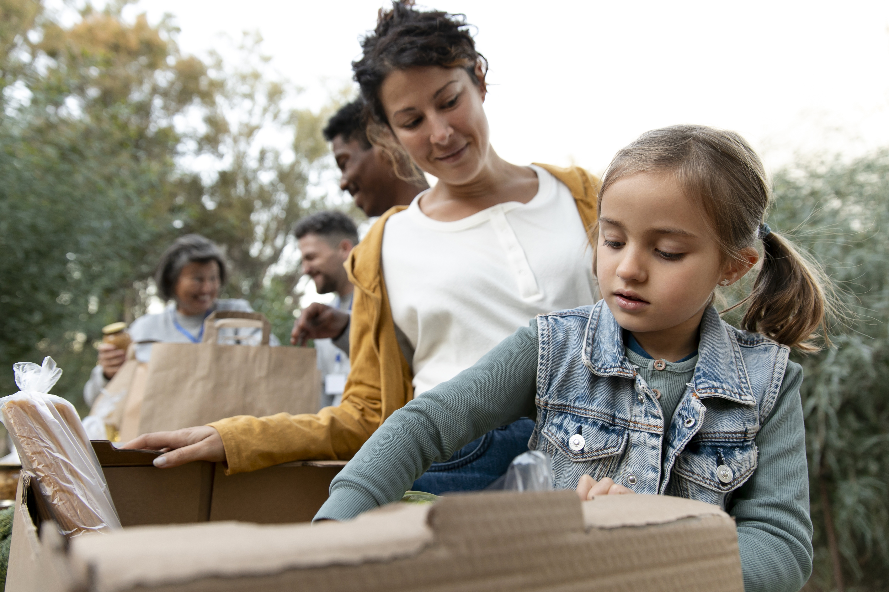
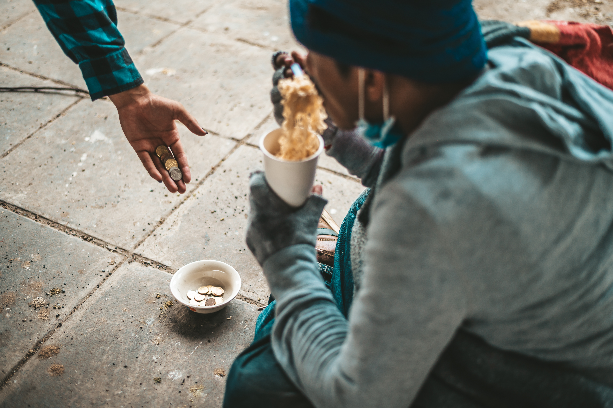
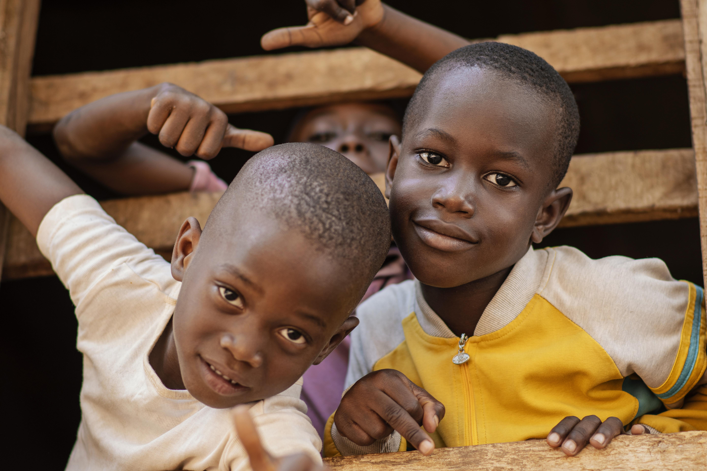

Disaster response
Assam Flood Relief Fund
Flooding can disrupt access to safe shelter, clean water, and essential supplies. This fictional fund represents support for families rebuilding after a disaster.
Support this fundAreas of focus
These sample projects show how a giving experience might help people connect a contribution to a cause.

Disaster response
Flooding can disrupt access to safe shelter, clean water, and essential supplies. This fictional fund represents support for families rebuilding after a disaster.
Support this fund
Food security
Nutritious food and everyday essentials can help families meet immediate needs. This fictional fund represents support for meals, hygiene kits, and supplies.
Support this fund
Learning & opportunity
School supplies and learning materials can open up opportunities for girls. This fictional fund represents support for education and a brighter future.
Support this fundThese fictional fund descriptions are for demonstration only. Public Relief does not verify partners, accept payments, or distribute funds.